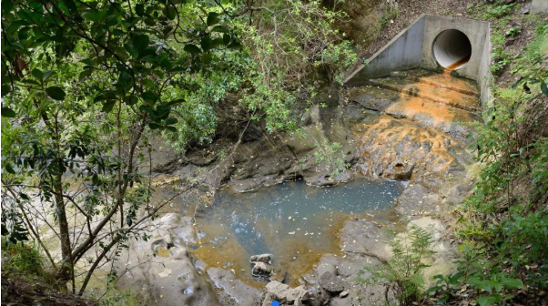

A Summary
Urban pollution is the introduction of harmful substances and forms of energy—like chemicals, noise, light, and heat—into city environments, negatively affecting ecosystems, wildlife, and human health. Urban pollution in waterways is mainly caused by stormwater runoff that picks up contaminants from cities and transports them into rivers, lakes, and coastal areas. Aside from plastic debris and sediment, common pollutants typically include heavy metals, oil, chemicals, nutrients, pathogens, and household wastes.
For water supply bores sampled prior to treatment, 6% failed the drinking water standard for E. coli.
Urban Pollution in NZ
Urban pollution in New Zealand is a growing environmental and public health issue, particularly in large urban centres like Auckland, Christchurch, Wellington, Hamilton, and Dunedin. It includes a combination of air, water, noise, light, and soil pollution, often driven by transport, construction, industrial activity, and stormwater runoff.
Since 1980, New Zealand has experienced at least 49 outbreaks of drinking water-related illnesses, including a major Havelock North incident in 2016 affecting 6,000–8,000 people and resulting in hospitalizations and deaths.
Approximately 12% of groundwater sites exceeded the nitrate drinking water standard on one or more occasions during the same period.
Sources of Urban Pollution
Urban Pollution can be the caused by many things aside from stormwater runoff, such as industrial spills and discharges, agriculture, and leaking seweage systems. Faecal contamination remains the most widespread water quality issue, impacting urban waterway health and posing risks to human and ecological health
Between 2019 and 2024, 46% of monitored groundwater sites failed the drinking water standard for E. coli on at least one occasion, indicating widespread microbial contamination.
Consequences of Urban Pollution on NZ's waterways
Urban waterways often have poorer water quality than rural ones, with higher levels of pathogens, sediments, and heavy metals like zinc and copper. These pollutants cause eutrophication, algal blooms, oxygen depletion, fish kills, and loss of aquatic biodiversity. They also pose human health risks through contaminated drinking water and recreational exposure to pathogens.